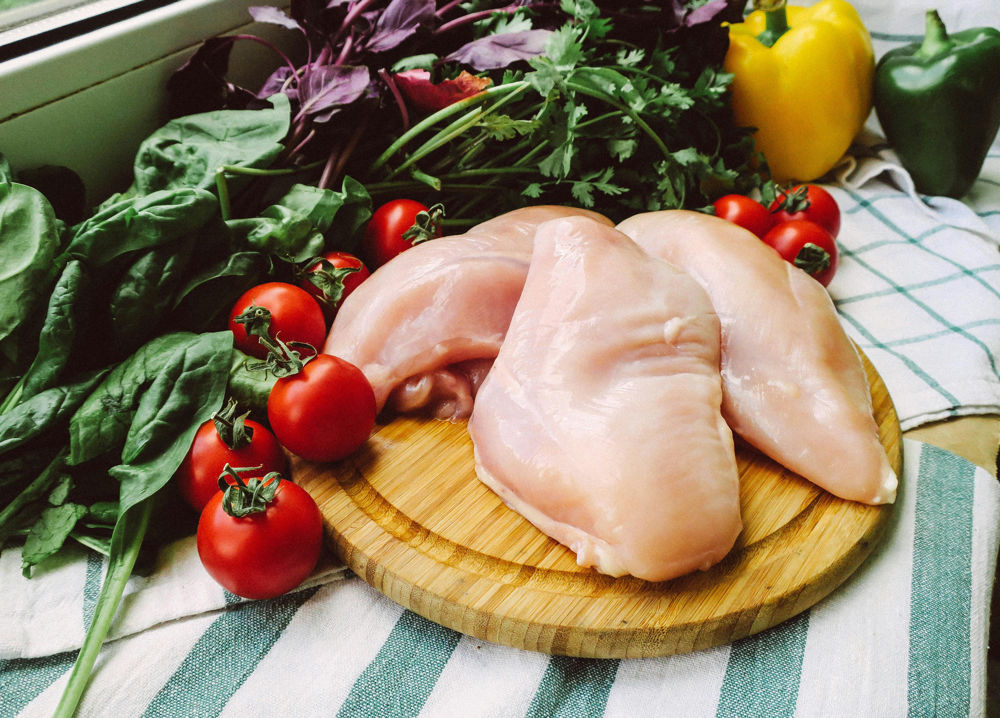

Carne de pollo para kebab
Pack de 500g de carne de pollo marinada lista para cocinar en casa.
Precio: 6,50 €
Pack de 500g de carne de pollo marinada lista para cocinar en casa.
Precio: 6,50 €
Pack de 500g de carne de ternera especiada, perfecta para kebabs caseros.
Precio: 7,50 €

Pack de 400g de falafel listo para freír y preparar kebabs vegetarianos.
Precio: 5,50 €
Bolsa con 6 unidades de pan de pita listo para rellenar con tus kebabs.
Precio: 2,50 €
Paquete con 4 tortillas de trigo grandes, perfectas para enrollar tus kebabs.
Precio: 3,00 €

Pack de 3 salsas: yogur, picante y especial Kebab Amigo, listas para disfrutar.
Precio: 4,50 €
Deja la carne en la marinada al menos 2 horas antes de cocinarla para que absorba todos los sabores.
Usa fuego medio-alto para sellar la carne y mantenerla jugosa en el interior.
Utiliza verduras frescas y salsas caseras para obtener el auténtico sabor de Kebab Amigo en tu casa.